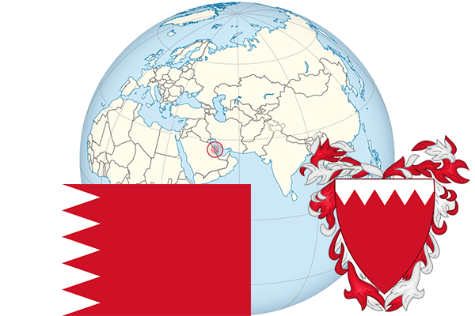

To`liq nomi: Bahrayn Qirolligi
Region: Janubi-g‘arbiy Osiyo
Qonunchilik shakli: Konstitutsion monarxiya
Mustaqillik kuni: 14- avgust 1971-yil Birlashgan qirollikdan
Poytaxti: Manama
Maydoni: 766 km² (dunyoda 184 -o`rinda )
Chegaradosh davlatlari: yo`q
Aholisi: 1,343,000 (dunyoda 157 -o`rinda ) 2014 -yil roʻyxat
Aholi zichligi: 1,626.6 /km²
Aholining o`rtacha yoshi: 74,75 yil ( 77,3 ayollar, 72,2 erkaklar)
Rasmiy tili: arab tili
Dini: islom
Pul birligi: Bahrayn dinori
Telefon prefiksi: +973
Internet domen: .bh
Xalqaro tashkilotlarga a`zoligi: BMT (1971 -yildan), Arab davlatlari uyushmasi (11-sentabr 1971 yildan)
Dengiz va okeanlarga chiqishi: Fors ko`rfazi
YIM: Butun: $ 34.908 mlrd, Jon boshiga: $ 29,146 (2014 - yil roʻyxati)
Yirik shaharlari: Manama